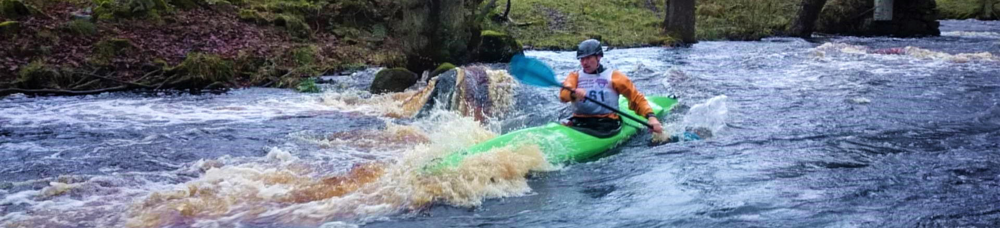
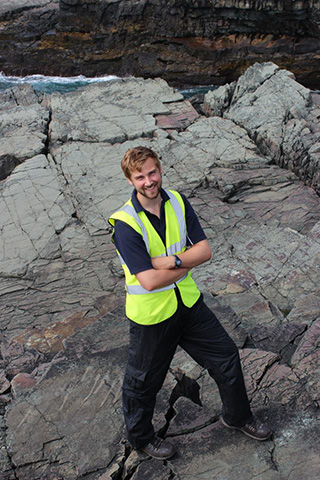

      <!--Header image.-->
      <!--<div style="padding: 10px 0 0 0;">
        
      </div>-->
      <div class="row" style="padding: 10px 0 10px 0;">
        <div><!--</div> class="para col-lg-8">-->
          <h1 style="text-align: start;">Outreach</h1>
          <h2>Overview</h2>
          <div class="para">
            <p>It has always been important to me that science should be communicated freely and clearly (so please <a href="./contact.html">contact me</a> if you are struggling to access any of my publications).
              From 2010 until I moved to Belgium I was an active UK STEM Ambassador, first in Oxford and then in Leicester.
              I would recommend to anyone who is interested in science communication to get involved with their local STEM Ambassadors branch, and for anyone looking for interesting working scientists, technologists, engineers, and mathematicians
              Whilst in Leicester, I developed an outreach resource to be used in local schools and focused on the amazing Ediacaran fossils from nearby <a href="http://www.ediacaran.org/charnwood-uk.html" target="_blank">Charnwood Forest</a>.
              [I'll upload the resource here soon!]
            </p>
            <p>I've appeared on the <a href="https://palaeoparty.weebly.com/stream-archive.html" target="_blank">PalaeoParty podcast</a> to describe my research.
              As part of that appearance I wrote an 'accessible' description of my research using the <a href="https://splasho.com/upgoer5/" target="_blank">Up-Goer Five text editor</a> which only lets you use the "ten hundred most used words"
              I'll let you decide if the following text makes more or less sense than my more <a href="./research.html#Overview">technical description</a>.
            </p>
            <div class="container-fluid" style="padding: 5px 20px 5px 20px;">
              <em><p>I look at the really really very old hot-cold and wet-dry feels of the world.
                I do this in two ways.
                First, I use the hard bits of small dead animals that we find in rocks.
                When animals in water grow hard bits, the stuff that those hard bits are made of writes and saves the hot-cold and wet-dry feels of the water they grew in.
                I find these old dead hard bits, break them down, and read the hot-cold and wet-dry feels of the world they lived in.
              </p>
              <p>The second thing I do is use big computers to make good guesses about the really very old hot-cold and wet-dry feels.
                We can see how different these computer guesses are from the feels saved in rocks and in the hard parts of small dead animals to work out which guesses are best.
                This means that I can better understand really really very old hot-cold wet-dry feels of the world.
              </p></em>
            </div>
            <p>Writing this text was really really very hard, but a very interesting exercise.
              I really would recommend trying to write a short paragraph on your favourite subject using Up-Goer Five!
            </p>
          </div>

          <!--Outreach articles-->
          <h2 id="OutArt">Outreach articles</h2>
          <div>
            <p>I've written a couple of science communication articles on and around my work, and plan to write a few more in the near future.</p>
            <ol reversed>
              <li>Williams, M., Zalasiewicz, J., <u>Hearing, T.W.</u>, 2018. <a href="https://theconversation.com/hothouse-earth-our-planet-has-been-here-before-heres-what-it-looked-like-101413" target="_blank">Hothouse Earth: our planet has been here before – here's what it looked like.</a> <i>The Conversation</i>.</li>
              <li><u>Hearing, T.W.</u> 2017. <a href="https://www.palaeontologyonline.com/articles/2017/patterns-palaeontology-cambrian-environments/" target="_blank">Patterns in Palaeontology: Environments of the Cambrian explosion.</a> <i>Palaeontology Online</i>, Volume 7, Article 6, 1–14.</li>
              <li>Williams, M., Perrier, V., Bennett, C., <u>Hearing, T.</u>, Stocker, C., Harvey, T., 2015. <a href="https://onlinelibrary.wiley.com/doi/full/10.1111/gto.12108" target="_blank">Ostracods: The ultimate survivors.</a> <i>Geology Today</i>, 31, 193 – 200.</li>
            </ol>
          </div>

        <!--<div class="col-md-4">
          
        </div>-->
      </div>

      <!--<footer style="padding: 10px 2px 2px 2px;" class="text-start">
        <div class="text-start fs-9 fw-light rounded" style="padding: 5px 5px 5px 5px; background-color: rgba(0, 0, 0, 0.1);">
          <div class="row"><i>Top image: Tom racing in the inter-universities wild water racing event on the River Washburn as a PhD student in 2014.</i></div>
          <div class="row"><i>Second image: Tom during field work at Mistaken Point, Newfoundland, Canada.</i></div>
        </div>
      </footer>-->
